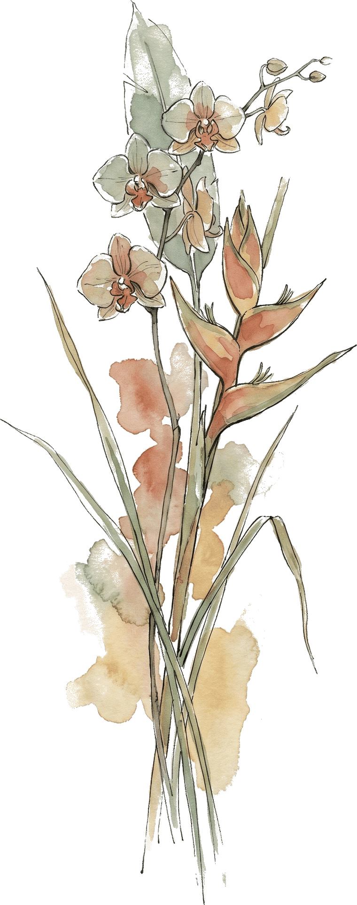
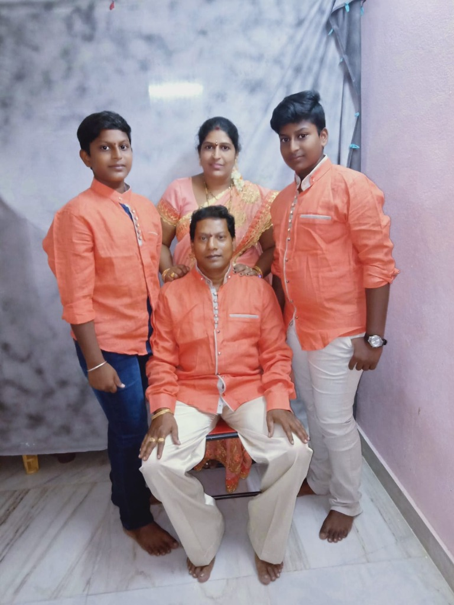

ANANTA · Endless Love. Eternal Bond. · Amma · Nanna · Ajay · Vijay
Drag the page to turn · Drag the glass across it
Family Story
ANANTA is a personal tribute to our parents—Nanna (Echarla Balaji, 50) and Amma (Echarla Lakshmi)—and the eternal bond they built for our family. Nanna’s journey as a Poojari at Sri Vasavi Temple in Amaravati began in the 1990s, performing sacred poojas, temple rituals, and traditional Vinayaka Chavithi mandap ceremonies with patience, generosity, and protection. From humble circumstances, Nanna built our family home and rode his Access 125 scooter every day with quiet strength.
Amma, holding a Degree in Commerce, worked from childhood through limited resources—including her early work at a bonda stall—with dignity, grace, and unyielding sacrifice. An exceptional cook, her legendary culinary art is celebrated in our future family dream, Amma Cheti Vanta. Their journey began on the temple stairs where Amma sat, leading to an arranged marriage built on love and mutual support. Raised with childhood memories of bicycle rides, secret toys, and hiding behind Nanna during tuition scoldings, brothers Ajay (born 2003) and Vijay (born 2005) carry their eternal legacy forward.

Plates

For everything you gave me…
AMMA & NANNA
I LOVE YOU FOREVER. ♾️
ANANTA
Endless Love. Eternal Bond.